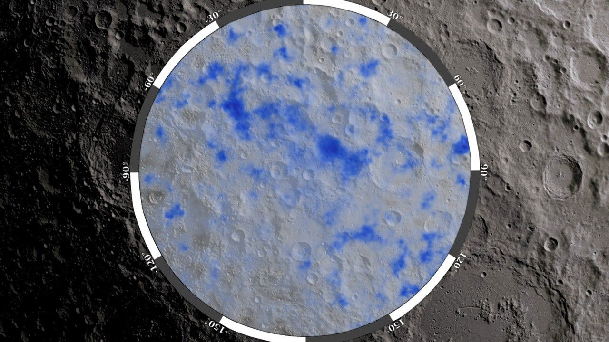

圖：NASA · NASA 原始來源 ↗
選一個探險目的地
如果去月球找冰，你會往哪裡走？
月海不是水，但月球上確實有水冰。兩極部分坑底長年照不到陽光，溫度極低，能把水冰留住；這種區域稱為「冷阱」。
圖中的藍色標出可能的水冰沉積區，不是一片藍色冰原。
沒有海洋，不代表完全無水月亮表面的深色平原叫「月海」，卻不是海水，而是古老熔岩留下的地形。它與每天變化的亮面不同：先從地球與月球的位置分清兩者，再走近月面，看看真正的水冰藏在哪裡。
開始探索 ↓
大約 45 億年前，地球還很年輕。按照目前主流的大撞擊假說，一個約火星大小的天體撞上早期地球，把大量物質拋向太空。其中一部分留在地球周圍，後來聚集成了月球。
月岩成分與內部結構，都是檢驗這個形成假說的線索；碰撞的細節仍在研究中。NASA · 月球形成 ↗

月相取決於我們能看見多少受光面；月海則記錄古老的火山活動。亮面的變化與表面的顏色，說的是兩件不同的事。